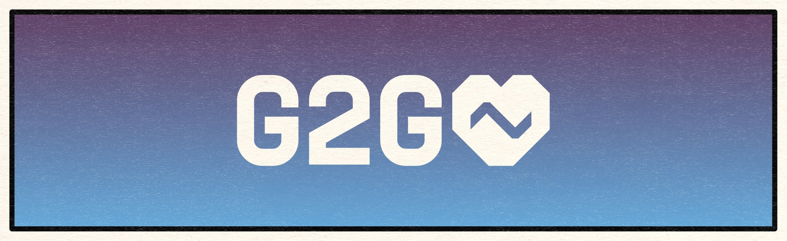

<!--
  ~ Copyright (c) 2023 D2ArmorPicker by Mijago.
  ~
  ~ This program is free software: you can redistribute it and/or modify
  ~ it under the terms of the GNU Affero General Public License as published
  ~ by the Free Software Foundation, either version 3 of the License, or
  ~ (at your option) any later version.
  ~
  ~ This program is distributed in the hope that it will be useful,
  ~ but WITHOUT ANY WARRANTY; without even the implied warranty of
  ~ MERCHANTABILITY or FITNESS FOR A PARTICULAR PURPOSE.  See the
  ~ GNU Affero General Public License for more details.
  ~
  ~ You should have received a copy of the GNU Affero General Public License
  ~ along with this program.  If not, see <http://www.gnu.org/licenses/>.
  -->

<mat-toolbar class="canary-warning" color="primary" *ngIf="is_canary">
  <span class="header-spacer"></span>
  You are using a canary build. Some features may be unfinished or vanish. Please report any issues
  you encounter.
  <span class="header-spacer"></span>
</mat-toolbar>

<mat-toolbar class="bungie-day" color="accent" style="display: none">
  <span class="header-spacer"></span>

  
  <a
    href="https://bungiefoundation.donordrive.com/participant/25284"
    target="_blank"
    title="Support the Bungie Foundation!">
    Please support us at the Bungie Game2Give 2024 ❤
  </a>
  <span class="header-spacer"></span>
</mat-toolbar>

<app-handle-bungie-login></app-handle-bungie-login>
<router-outlet></router-outlet>
